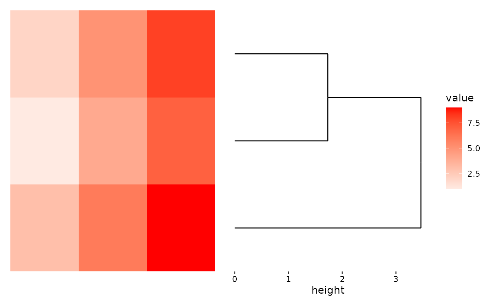

![[Stable]](figures/lifecycle-stable.svg)
stack_active is an alias for stack_switch(), which sets what = NULL by
default.
Arguments
- sizes
A numeric value or a
unitobject. When used for thequad_layout()annotation, it must be of length1. When used in thestack_layout()with a nestedquad_layout(), it should be of length3, specifying the relative heights (fordirection = "h") or widths (fordirection = "v") to be applied to the layout.- what
What should get activated for the stack layout? A single number or string of the plot elements in the layout. If
NULL, will remove any active context, this is useful when the active context is aquad_layout()object, where anyalign_*()will be added to thequad_layout(). By removing the active context, we can addalign_*()into thestack_layout().- ...
These dots are for future extensions and must be empty.
Value
A stack_switch object which can be added to stack_layout().
Examples
stack_discrete("h", matrix(1:9, nrow = 3L)) +
ggheatmap() +
# ggheamtap will set the active context, directing following addition
# into the heatmap plot area. To remove the heatmap active context,
# we can use `stack_active()` which will direct subsequent addition into
# the stack
stack_active() +
# here we add a dendrogram to the stack.
align_dendro()
#> → heatmap built with `geom_tile()`
